Bayun designed this snake for my leg. He can't be here to execute it,
so I'm bringing it to you. This brief documents his style so that his DNA
travels with the design.
← → to navigate · touch to swipe
images/design.jpg
The Vision비전
What this piece is about이 작품이 담고자 하는 것
01
This is about showcasing the elegance of the loops, the contours, and the play of light and shadow. The shading is not decorative. It is the whole point.이 작품은 루프의 우아함, 윤곽선, 그리고 빛과 그림자의 대비를 표현하는 것입니다. 음영은 장식적인 요소가 아니라 — 핵심 그 자체입니다.
02
The intricacy of every detail (each scale, each coil, each shadow) exists within a silhouette that is in perfect harmony with my specific anatomy. The design belongs to this body.모든 세부 요소의 정교함 — 각 비늘, 각 코일, 각 그림자 — 은 제 특정 신체 구조와 완벽한 조화를 이루는 실루엣 안에 존재합니다. 이 디자인은 이 몸에 속합니다.
03
The tone is high fashion and elegance. Not scary, not aggressive, not a monster. Powerful and calm. Beautiful first.분위기는 하이 패션과 우아함 — 무섭거나 공격적이거나 괴물 같지 않게. 강하고 차분하게. 무엇보다 아름답게.
The Ask
Show me a shaded version of this design — applying the specific techniques and style elements from Bayun's snake work documented in this brief.
Bayun's design handles the structure and silhouette. What we need from you
is to execute the shading and surface detail in his technical language —
the scale work, the shadow logic, the tonal depth that gives his snakes
that dimensional quality.
Everything in this brief is a reference to help you understand that language
before you touch the design.
images/design.jpg
01 — The Artist
Bayun's Work
This is what Bayun does. This is the visual language and technical standard Bobby needs to work in.
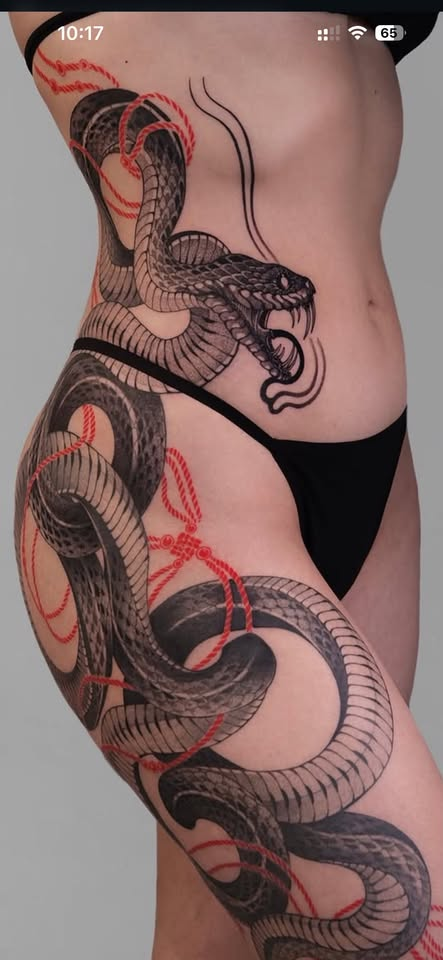
ref-leg-red-cord.jpg
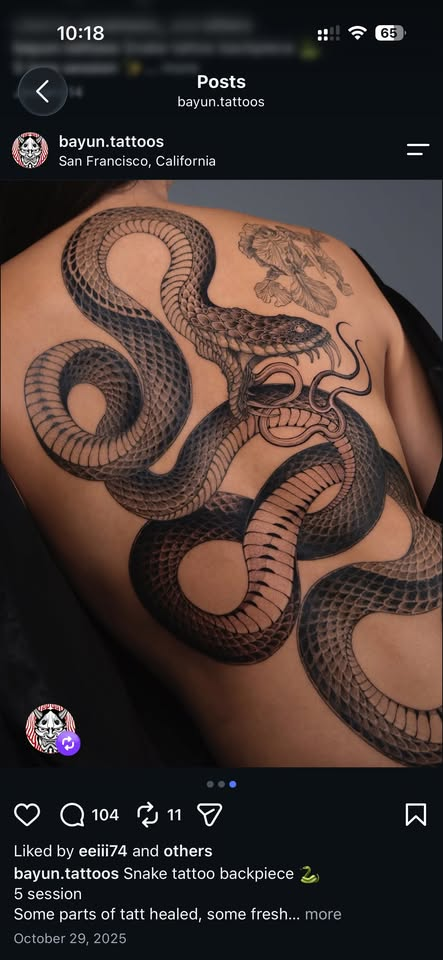
ref-backpiece.jpg
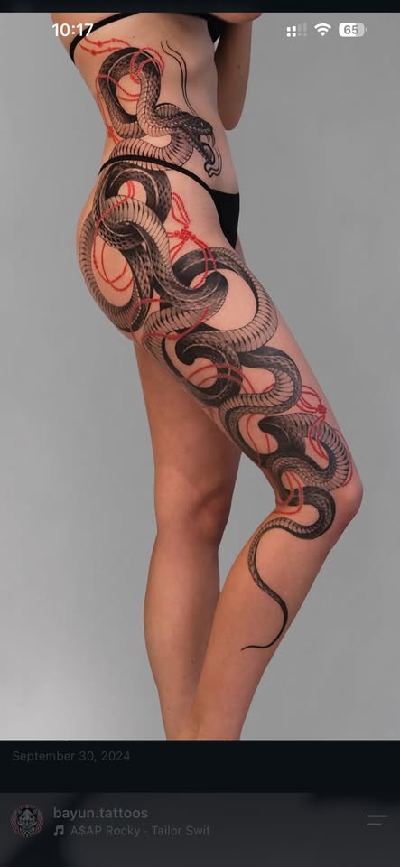
ref-leg-full-red-cord.jpg
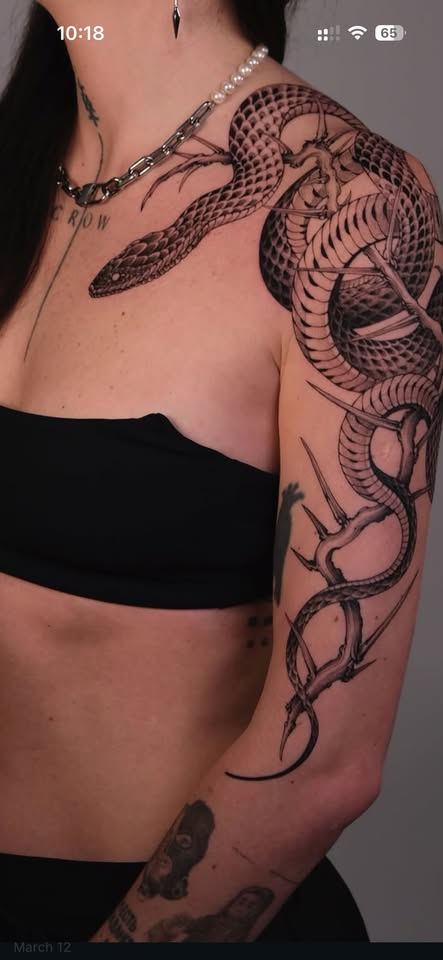
ref-shoulder-thorns.jpg
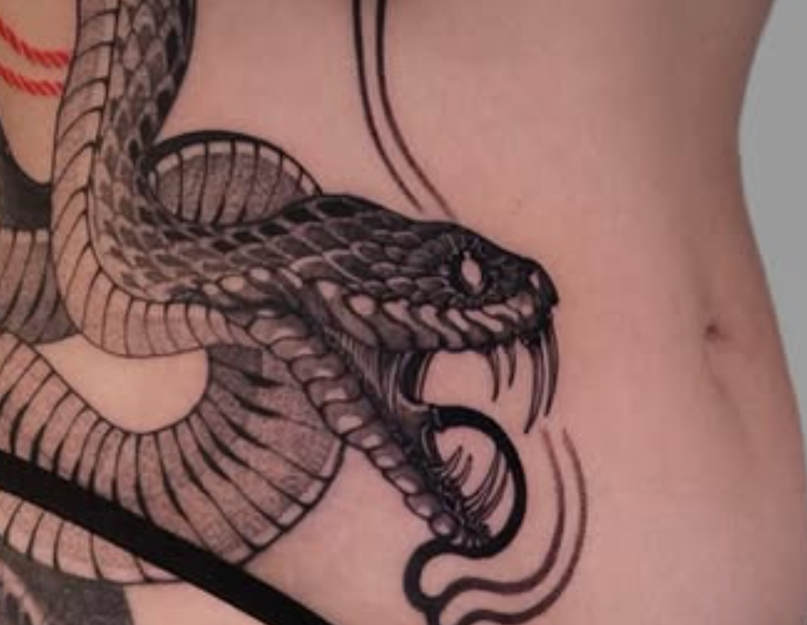
ref-ribs-open-mouth.png
1 / 5
Visual Language · Scales
Scale Shading비늘 음영
Every single scale on the back has its own shadow inside it. The bottom edge of each scale is the darkest. The scale above it blocks the light there. The tip of each scale is lighter. This is repeated across the whole body.등의 모든 비늘 하나하나에 개별적인 음영이 있습니다. 각 비늘의 아랫부분이 가장 어둡고 — 위의 비늘이 그 부분의 빛을 가립니다. 비늘의 끝부분은 더 밝습니다. 이것이 몸 전체에 걸쳐 반복됩니다.
Visual Language · Belly
Belly Texture배 질감
The belly is a different texture from the back. The back has teardrop-shaped scales: pointed at the top where each scale tucks under the one above, rounded at the free bottom edge. They overlap like roof tiles. The belly has horizontal parallel bands, like flat stacked ribs. There is a clear dividing line between the back and belly. Each belly band has its own shadow at the bottom edge. Same shading logic as the dorsal scales.배는 등과 다른 질감입니다. 등은 눈물방울 형태의 비늘이고 (위쪽이 뾰족하고 아래쪽 자유단이 둥근 형태, 지붕 기와처럼 겹쳐져 있음), 배는 수평으로 평행한 밴드 — 납작하게 쌓인 갈비뼈처럼 보입니다. 등 비늘과 배 밴드 사이에는 명확한 경계선이 있습니다. 각 배 밴드의 아랫부분에는 음영이 있습니다 — 등 비늘과 동일한 요소별 음영 원리입니다.
Visual Language · Body Shadow
Body Shadow몸통 음영
Where the body curves away from view, or one section passes under another, it goes to solid black. Not a soft gradient. A hard edge into black. The transition from light to dark is fast and confident.몸통이 시야에서 멀어지거나 한 부분이 다른 부분 아래로 지나갈 때 완전한 검정색이 됩니다. 부드러운 그라데이션이 아닌 — 검정으로 이어지는 선명한 경계입니다. 밝음에서 어둠으로의 전환은 빠르고 자신감 있습니다.
Visual Language · Coil Shadow
Coil Shadow코일 음영
One coil twist renders three distinct patterns at once — this is where the piece has the most visual complexity:
1 — Dark shadow zone. The inside of the bend is solid black. This is the area that curves away from view and receives no light.
2 — The dividing line. Between the black shadow and the lit side, a thin curved line of bare skin is left unpigmented. The skin itself is the separator, not an ink line. This negative space gives the coil a crisp, clean edge.
3 — Lit dorsal scales. The outward-facing side of the body shows the full dorsal scale texture with per-scale shading: each scale dark at its base, lighter at its tip.
4 — Belly bands. Where the body curves around, the ventral surface becomes visible — the horizontal parallel bands distinct from the dorsal scales above.
All three surface patterns — shadow, dorsal scales, belly — visible in a single twist.하나의 코일 트위스트에서 세 가지 다른 패턴을 동시에 볼 수 있습니다 — 이것이 작품에서 가장 시각적으로 복잡한 부분입니다:
1 — 어두운 그림자 영역. 굽힘의 안쪽은 완전한 검정입니다. 빛이 닿지 않는 부분입니다.
2 — 경계선. 검정 그림자와 밝은 면 사이에, 잉크 없이 남겨진 얇은 곡선의 피부 선이 있습니다. 피부 자체가 구분선입니다 — 잉크 선이 아닙니다. 이 여백이 코일에 선명하고 깔끔한 윤곽을 줍니다.
3 — 빛이 닿는 등 비늘. 몸통의 바깥쪽 면에는 비늘별 음영이 있는 등 비늘 질감이 보입니다.
4 — 배 밴드. 몸통이 굽어지는 곳에서 배 부분이 보입니다 — 등 비늘과 구별되는 수평 평행 밴드.
그림자, 등 비늘, 배 — 세 가지 표면 패턴이 하나의 트위스트에서 동시에 보입니다.
Visual Language · Head
The Head머리
Closed mouth, calm expression. The head has the same per-scale shading as the body, but denser — the top of the head sits in deep shadow. The eye itself is a simple dark almond shape, but the area around it carries significant detail: prominent brow-line scales above the eye (individually shaded, giving the snake its expression), temporal scales framing the eye from behind, and the snout continuing the full scale texture all the way to the tip. The facial detail is in the surrounding structure, not the eye itself.닫힌 입, 차분한 표정. 머리는 몸통과 동일한 비늘별 음영을 가지지만 더 촘촘합니다 — 머리 윗부분은 깊은 그림자 속에 있습니다. 눈 자체는 단순한 어두운 아몬드 형태이지만, 그 주변에 상당한 디테일이 있습니다: 눈 위의 눈썹 역할을 하는 선명한 비늘들(개별 음영 처리, 뱀의 표정을 만들어 냄), 눈 뒤쪽을 프레이밍하는 측두부 비늘들, 그리고 주둥이 끝까지 이어지는 비늘 질감. 얼굴의 디테일은 눈 자체가 아닌 주변 구조에 있습니다.
NOT this — Bayun's default is open mouth. My piece should have a closed, calm mouth. The energy is powerful but not aggressive.이것은 안 됩니다 — 바윤의 기본 스타일은 열린 입입니다. 제 작품은 닫힌 차분한 입이어야 합니다. 힘차지만 공격적이지 않은 표현.
1 / 2
Visual Language · Line Weight시각적 언어 · 선 굵기
Line Weight선 굵기
BOBBY'S STYLEBobby 스타일
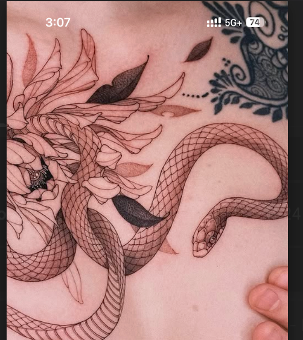
BAYUN'S STYLEBayun 스타일
This piece needs to be executed in Bayun's line weight, not Bobby's natural style. The structural lines (body outlines, scale borders, coil edges) need confident, solid weight. Interior detail lines within scales can be finer. This is also about longevity: thin lines blur and fade as ink migrates in skin over years. Heavier structural lines hold their edges and stay readable for decades.이 작품은 Bobby의 자연스러운 스타일이 아닌 Bayun의 선 굵기로 작업해야 합니다. 구조적인 선(몸통 외곽선, 비늘 경계선, 코일 가장자리)은 자신감 있고 탄탄한 굵기가 필요합니다. 비늘 내부의 세부 선은 더 가늘어도 됩니다. 이것은 지속성의 문제이기도 합니다: 가는 선은 수년에 걸쳐 잉크가 이동하면서 흐려지고 희미해집니다. 굵은 구조적 선은 경계를 유지하며 수십 년간 선명하게 남습니다.
03 — Composition · Silhouette
Diamond Silhouette Shape다이아몬드 실루엣 형태
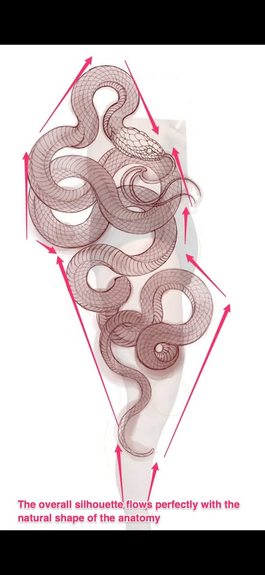
The whole composition forms a diamond shape — wide at the top (hip), narrow at the ankle. The shape of the piece matches the shape of the leg.전체 구성이 다이아몬드 형태 — 위쪽(엉덩이)은 넓고, 발목은 좁습니다. 작품의 형태가 다리의 형태와 일치합니다.
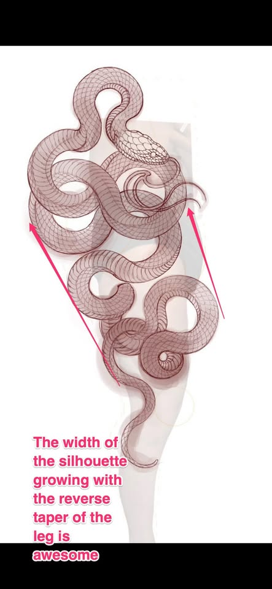
The coil spread grows wider as the leg gets wider going up. This proportional growth must be preserved. It is what makes the piece feel like it belongs to the leg.코일의 폭은 위로 갈수록 다리가 넓어짐에 따라 함께 넓어집니다. 이 비례적 성장은 반드시 유지되어야 합니다 — 이것이 작품을 다리에 자연스럽게 속하게 만드는 요소입니다.
1 / 2
03 — Composition · Geometry
Upper Coil Triangle상단 코일 삼각형
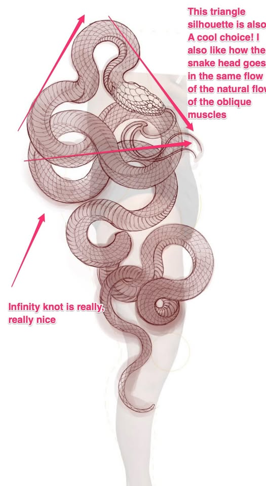
The upper coils near the hip form a triangle shape. The snake's head points in the direction of the oblique muscles — this is intentional, not random. The placement follows the anatomy of the body. There is also a secondary triangle formed by the figure-8 knot area near the neck.엉덩이 근처의 상단 코일이 삼각형 형태를 만듭니다. 뱀의 머리는 복사근 방향을 따라 향하고 있습니다 — 이것은 의도적이며 무작위가 아닙니다. 배치는 신체의 해부학적 구조를 따릅니다. 목 근처의 8자 매듭 부분에도 보조 삼각형이 형성됩니다.
03 — Composition · Continuity
Snake Loops Over Itself뱀이 자신의 몸 위로 교차
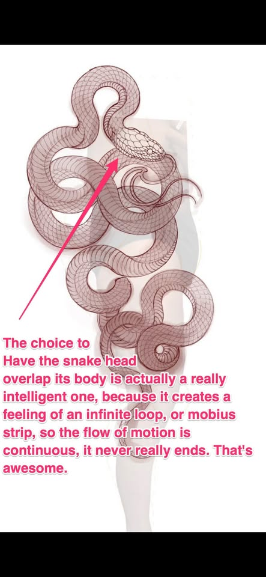
The snake's head crosses over its own body. Because of this, the snake has no clear start point and no clear end point. When you follow it with your eyes, you keep going — the movement never stops. This is what makes the piece feel alive and continuous.뱀의 머리가 자신의 몸 위로 교차합니다. 이 때문에 뱀에는 명확한 시작점도 끝점도 없습니다. 눈으로 따라가면 계속 이어지며 — 움직임이 멈추지 않습니다. 이것이 작품을 살아있고 연속적으로 느끼게 만드는 요소입니다.
03 — Composition · Negative Space
Designed Negative Space의도된 여백
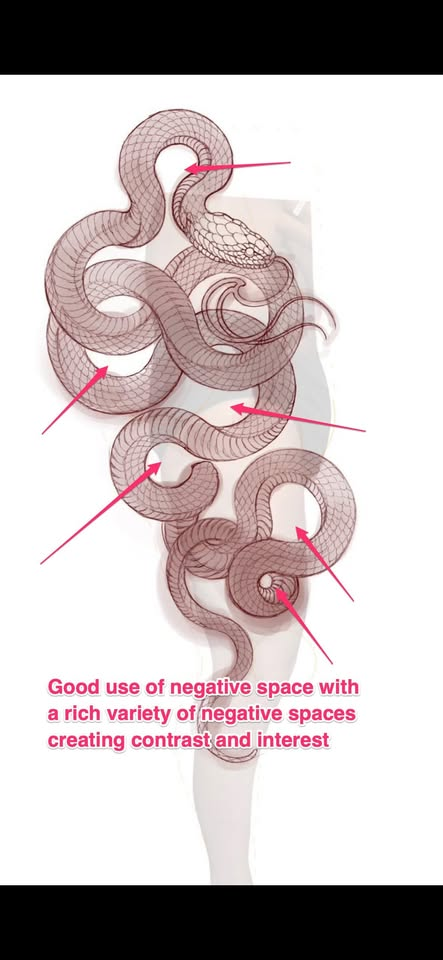
The open skin inside the loops is not empty space. It is designed. There are open areas of different sizes placed throughout the piece. Smaller open areas and larger open areas together create visual contrast and interest. The large ring shape on the upper thigh was specifically requested by me — that open skin must stay.루프 안쪽의 열린 피부는 비어있는 공간이 아닙니다 — 디자인된 공간입니다. 작품 전체에 크기가 다른 열린 공간들이 배치되어 있습니다. 작은 열린 공간과 큰 열린 공간이 함께 시각적 대비와 흥미를 만듭니다. 허벅지 상단의 큰 링 형태는 제가 특별히 요청한 것입니다 — 그 열린 피부는 반드시 유지되어야 합니다.
03 — Composition · Flow
Directional Flow방향성 흐름
The snake moves in a consistent zig-zag pattern from ankle to hip. The zig-zag gets larger as the leg gets wider going up. Left image (good): clear, consistent direction. Right image (bad): random direction with no flow. The left example is always the goal.뱀은 발목에서 엉덩이까지 일정한 지그재그 패턴으로 움직입니다. 위로 갈수록 다리가 넓어지면서 지그재그도 커집니다. 왼쪽 이미지(좋은 예): 명확하고 일관된 방향. 오른쪽 이미지(나쁜 예): 흐름이 없는 무작위 방향. 왼쪽 예시가 항상 목표입니다.
The Brief
Bobby's ChecklistBobby의 체크리스트
Per-scale gradient shading비늘별 그라데이션 음영Dark at base of each scale, light at free edge — every scale individually각 비늘의 아랫부분은 어둡고, 끝부분은 밝게 — 모든 비늘 개별 처리
Hard body shadow cuts선명한 몸통 음영Shadow side goes deep black quickly — no soft grey washes그림자 부분은 빠르게 깊은 검정으로 — 부드러운 회색 없음
Coil shadow logic코일 음영 원리Inside of curve = black; outside of curve = light굽힘 안쪽 = 검정; 굽힘 바깥쪽 = 밝음
Two different textures두 가지 다른 질감Teardrop-shaped scales on back (rounded free edge, not diamond); horizontal parallel bands on belly등: 눈물방울 형태 비늘 (라운드 끝부분, 다이아몬드 아님); 배: 수평 평행 밴드
Closed mouth, calm head닫힌 입, 차분한 머리No open jaw — peaceful, powerful, not aggressive열린 턱 없음 — 평화롭고 강하며 공격적이지 않게
Head crosses over its own body머리가 자신의 몸 위로 교차No clear start or end — eye keeps moving around the piece명확한 시작점/끝점 없음 — 시선이 계속 작품 주변을 돌게 됨
Wispy motion lines from head/tail머리/꼬리의 가는 동선3–5 fine curving lines — sparse, never overdone3–5개의 가는 곡선 — 드물게, 과하지 않게
Diamond overall silhouette다이아몬드 전체 실루엣Wide at hip, point at ankle — matches the shape of the leg엉덩이는 넓고, 발목은 좁게 — 다리 형태와 일치
Triangle shape in upper section상단의 삼각형 형태Upper coils form a triangle; head follows the oblique muscle line상단 코일이 삼각형 형성; 머리는 복사근 라인을 따름
Figure-8 knot in lower/mid section하단/중간의 8자 매듭A clear 8-shape — not just a random coil명확한 8자 형태 — 무작위 코일이 아님
Open ring spaces preserved열린 링 공간 유지The skin inside the loops is designed — do not fill it in루프 안의 피부는 디자인된 것 — 채우지 마세요
Consistent zig-zag flow, ankle to hip발목에서 엉덩이까지 일관된 지그재그Clear upward direction — never random or chaotic명확한 상향 방향 — 무작위나 혼란스럽지 않게
Loops get wider going up위로 갈수록 루프가 넓어짐Proportional to the leg width — follows body anatomy다리 너비에 비례 — 신체 해부학을 따름
Heavier line weight throughout전체적으로 더 굵은 선 굵기Main outlines and scale borders need body — thin lines blur in skin over time주요 외곽선과 비늘 경계선은 굵어야 함 — 가는 선은 시간이 지나면 피부에서 흐려짐
Bayun designed this snake with a lot of care. I trust you to bring it to life with your own skill and attention. I'm excited to work with you.바윤은 이 뱀을 많은 정성을 담아 디자인했습니다. Bobby의 실력과 세심함으로 이 디자인에 생명을 불어넣어 주실 것을 믿습니다. 함께 작업하게 되어 기쁩니다.